판매만 쓰던 회사에 재고 모듈을 켜고, 주문 이벤트에 따라 출고 전표가 만들어지는 흐름을 살펴봅니다. 재고 구독을 시험용으로 고장 내도 판매는 멈추지 않고, 고친 뒤 재시도하면 누락 없이 복구됩니다.
무엇을 · 왜#
모듈 사이의 통로는 원장의 이벤트 하나뿐입니다. 주문 확정은 판매 문서만 바꾸고 끝납니다. 재고 모듈은 그 이벤트를 다른 트랜잭션에서 읽어 출고 전표를 만듭니다.
| 일 | 판매 모듈 | 재고 모듈 |
|---|---|---|
| 주문 확정 | 이벤트를 남기며 재고는 알지 못함 | 이벤트를 받아 출고 전표 생성 |
| 출고 완료 | 이벤트를 받아 납품 상태 변경 | 재고를 줄이고 이벤트 기록 |
| 재고 구독 고장 | 계속 동작 | 해당 이벤트에서 멈추고 원인 표시 |
그 대신 모듈 사이에는 최종 일관성이 적용됩니다. 주문 확정 뒤 출고 전표가 생기기까지 짧은 지연이 있고, 재고 모듈이 멈춘 동안에는 출고 전표가 없습니다.
먼저 알아 둘 것
- 가온가전은 가상 회사이고, 수치는 모두 가상 회사의 것입니다. 화면은 로컬 Supabase에서 찍었습니다.
- 켜기 전의 재고 수량과 품절 여부는 다시 만들 수 없습니다. 켜기 화면이 먼저 알려 줍니다. 기초 재고를 입력한 날부터 이력이 쌓입니다.
- 고장 단계는 실제 장애가 아니라 시험입니다. 구독 처리기가 실패하도록 바꾸는 작업은 화면 밖에서 SQL로 실행했습니다. 운영 중인 회사에서는 실행하지 마세요.
따라 하기#
앞 장을 마친 회사에서 시작합니다. 구성원 이재고(역할 재고)를 앞 장과 같은 방법으로 추가해 둡니다.
- 재고 켜기. 관리자로 설정 → 모듈을 열고 재고 카드의 켜기를 누릅니다. 품절 보정 수요 예측, 품절 예상일, 발주 정책 변경, 창고 재배치가 열린다는 것과 다시 만들 수 없는 것을 알려 줍니다.

재고 켜기 - 옵션 고르기. 이 날짜 이후 미납품 주문을 출고 대기로 가져오기에 오늘 날짜를 넣으면 앞 장의 주문이 출고 대기로 등록됩니다. 비워 두면 켠 뒤의 주문만 받습니다. 켜기를 누릅니다.
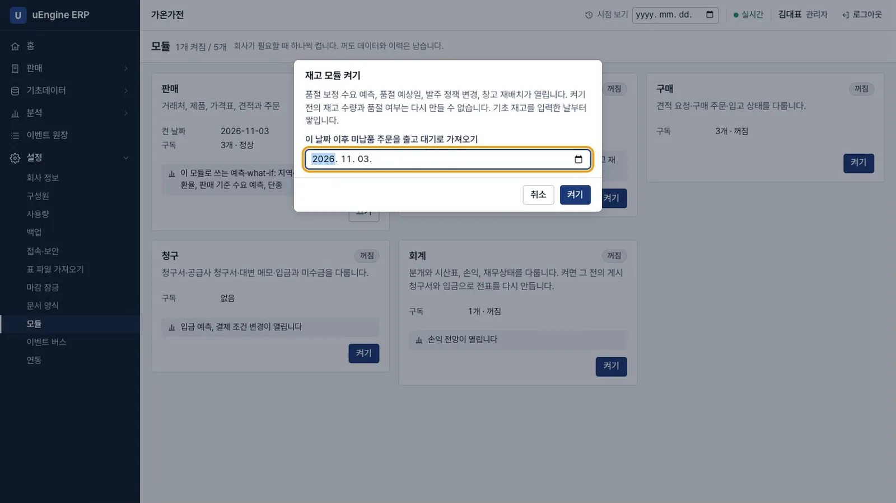
옵션 - 메뉴 확인. 새로 고치지 않아도 메뉴에 재고가 나타납니다. 재고 현황, 입출고 전표, 재고 조정, 재주문 규칙, 창고 등이 있습니다.
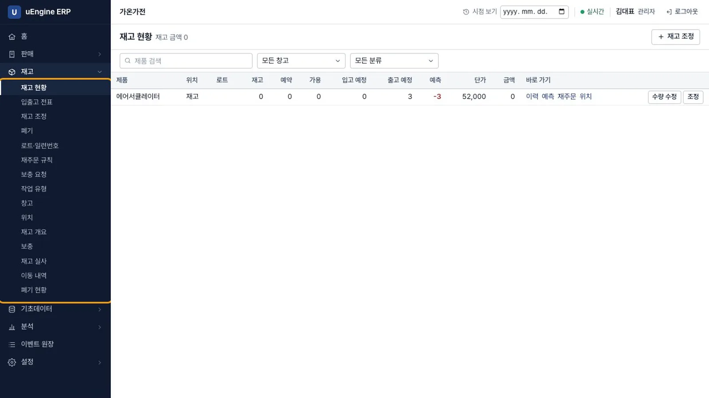
재고 메뉴 - 기초 재고 넣기. 이재고로 로그인해 재고 현황 → 재고 조정에서
에어서큘레이터, 위치재고, 실사 수량100, 사유기초 재고를 넣습니다. 저장을 누른 뒤 재고에 반영을 누릅니다. 반영한 조정은 고칠 수 없습니다.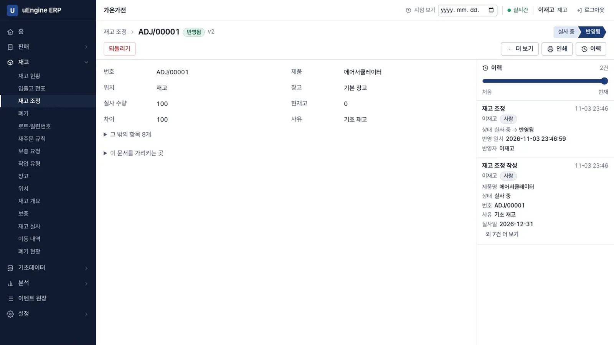
재고 조정 - 재고 현황 확인. 재고는 100, 앞 장의 주문으로 예약된 출고 예정 수량은 3으로 보입니다.
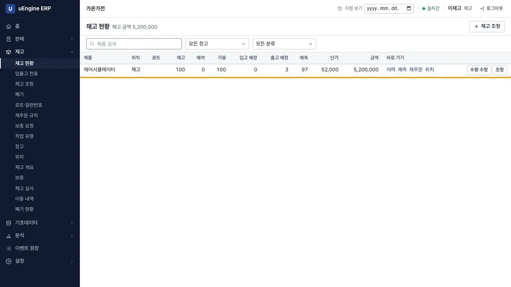
재고 현황 - 주문 확정. 박영업으로 로그인해 수량
5인 주문을 만들어 주문 확정을 누릅니다(공급가액 445,000). 새로 고치지 않아도 납품 상태가 납품 전이 되고 출고 전표 번호(WH/OUT/00002)가 나타납니다.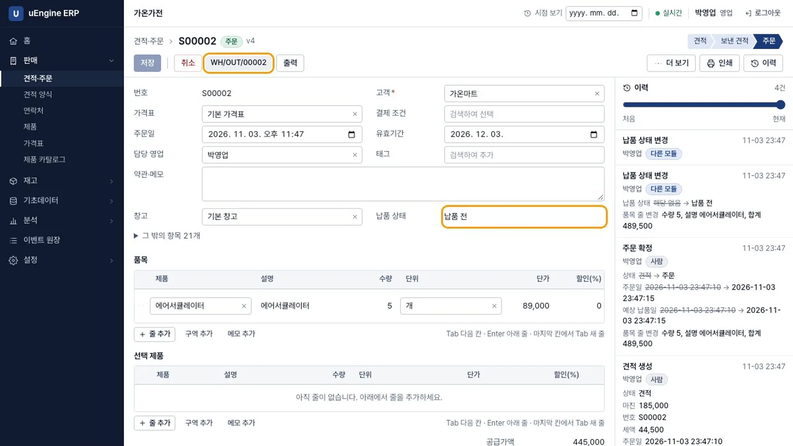
주문과 출고 전표 - 출고 완료. 이재고로 로그인해 그 전표를 열고 처리 완료를 누릅니다. 처리를 완료한 전표는 고칠 수 없습니다.
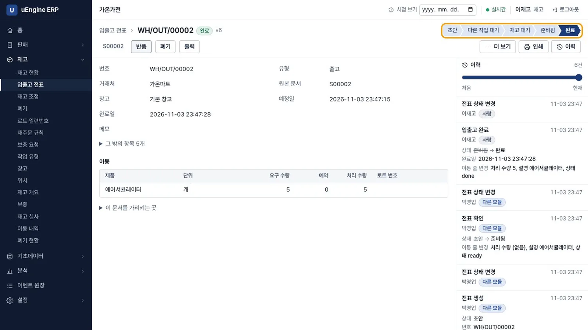
출고 완료 - 납품 상태 확인. 재고는 95로 줄었고, 주문으로 돌아가면 납품 완료입니다. 판매 모듈이 재고의 이벤트를 받아 납품 상태를 바꾼 것입니다.
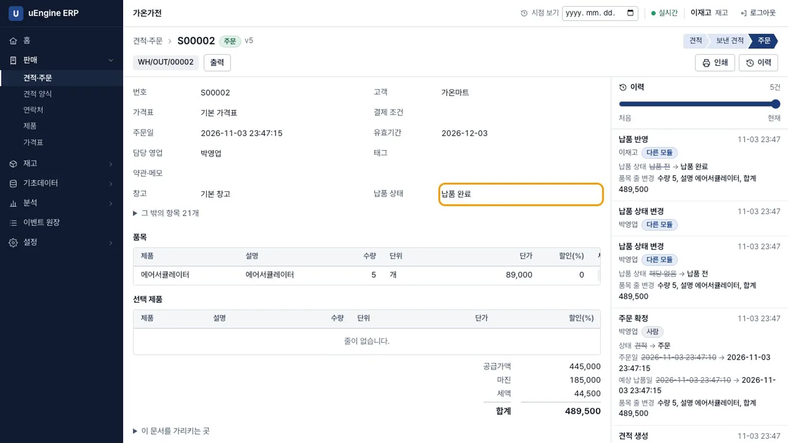
납품 완료 - 고장 내기(시험). 연습용 프로젝트에서만 합니다. SQL 실행 도구에서 재고 구독
inventory.sales의 처리기를 항상 실패하는 함수로 바꿉니다.create or replace function erp.test_broken(ev erp.events) returns void language plpgsql as $f$ begin raise exception '창고 연결 실패 (시험용 고장)'; end $f$; update erp.subscriptions set handler = 'erp.test_broken' where name = 'inventory.sales'; - 주문 다섯 건 확정. 녹화에서는 네 건을 박영업 계정의 명령으로 보내고, 마지막 한 건을 관리자가 화면에서 확정했습니다. 판매 모듈에는 아무 오류도 발생하지 않습니다.
- 배너 보기. 관리자 화면 위쪽에
재고 모듈이 이벤트 #105 에서 멈췄습니다. 다른 모듈과 사용자의 작업은 영향받지 않습니다.가 뜹니다. 번호는 회사마다 다릅니다. 어느 화면에서나 보입니다.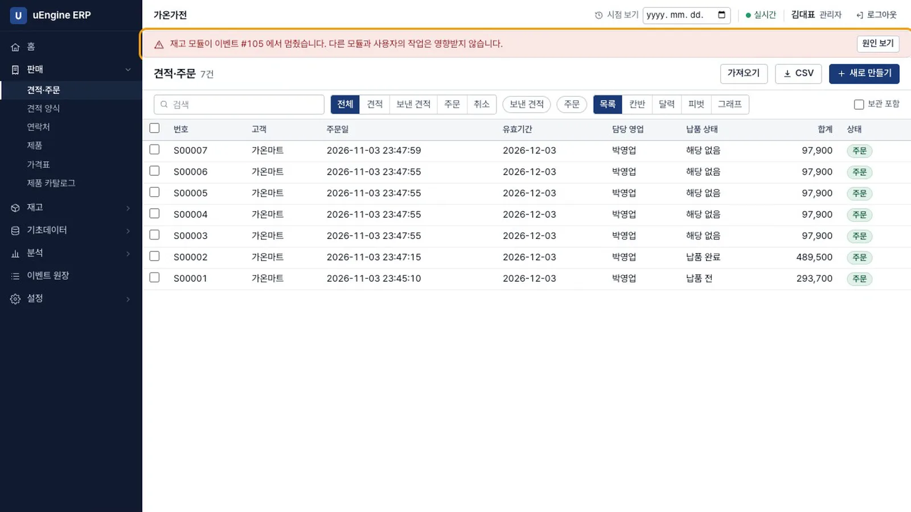
멈춤 배너 - 원인 보기. 원인 보기를 누르면 이벤트 버스 화면이 열립니다.
inventory.sales만 멈춤이고, 어떤 이벤트에서 왜 멈췄는지 오류 문구가 그대로 보입니다. 판매 구독sales.delivery는 정상입니다.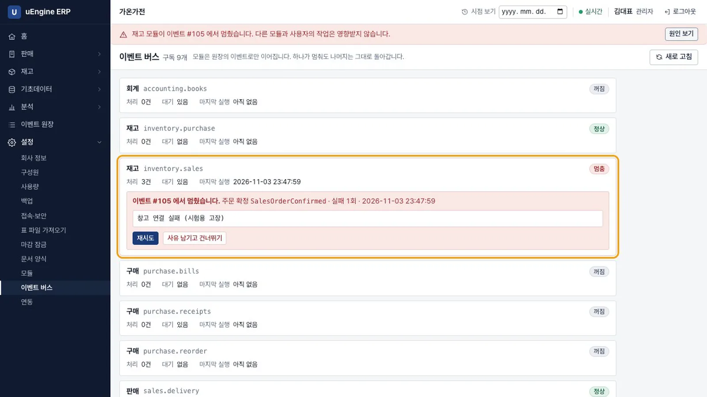
이벤트 버스 - 고치고 재시도. 처리기를 원래대로 복구하고 재시도를 누릅니다.
update erp.subscriptions set handler = 'erp.stock_on_order' where name = 'inventory.sales';이벤트 5건을 처리했습니다.가 뜨고 배너가 사라집니다. 처리기를 고치지 않고 누르면아직 멈춰 있습니다라고 표시됩니다. 고칠 수 없는 이벤트는 사유 남기고 건너뛰기로 넘어갈 수 있고, 사유는 원장에 남습니다.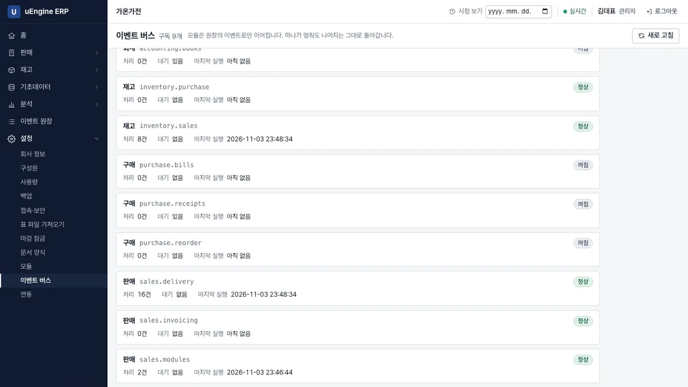
복구 - 전표 확인. 입출고 전표 목록이 7건입니다. 앞의 2건에 고장 난 동안의 주문 5건이 더해졌습니다. 누락되거나 중복된 전표는 없었습니다.
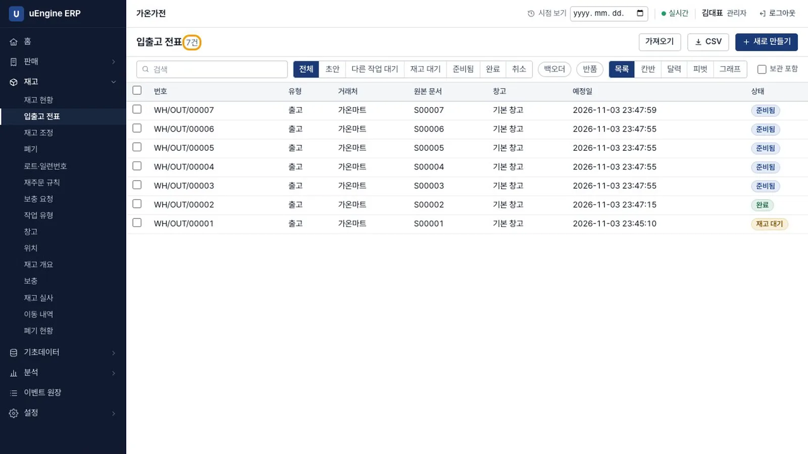
전표 목록
확인 문제#
재고가 모자라면 주문 확정이 막히나요?
막히지 않습니다. 판매 모듈은 재고를 모릅니다. 출고 전표가 부족 상태로 기다립니다.
재고 모듈이 멈춘 동안 확정한 주문은 어떻게 되나요?
주문은 정상적으로 확정됩니다. 이벤트는 원장에 남아 있고, 재고 구독의 커서가 그 이벤트에서 멈춰 있을 뿐입니다. 고친 뒤 재시도하면 밀린 이벤트를 순서대로 처리하므로 전표가 누락되거나 중복 생성되지 않습니다.
재고를 켜면 과거의 품절 기록도 생기나요?
생기지 않습니다. 켜기 전의 재고 수량과 품절 여부는 어디에도 기록된 적이 없어 다시 만들 수 없습니다. 켜기 화면이 그렇게 알려 줍니다.